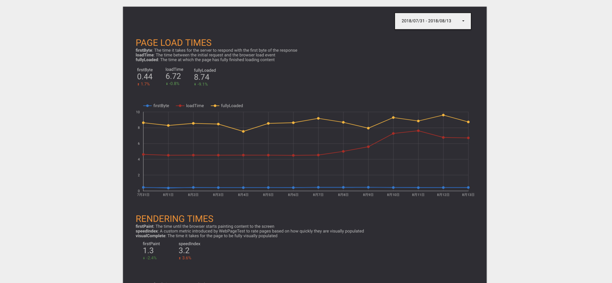
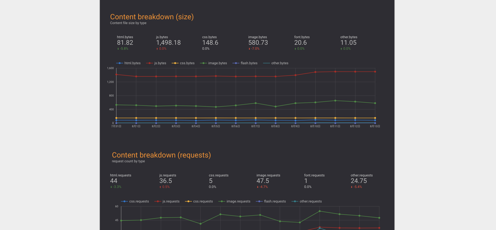

計測
ページロードのパフォーマンスを計測については、すでに多くのツールやサービスが存在します。
以下はパフォーマンス計測を行えるサービスの例です。
- WebPagetest（無料）
- SpeedCurve（有料）
- Calibre（有料）
- New Relic Synthetics（有料）
- CatchPoint（有料）
今回の対象のサイトはログインが必須であったことと、とりあえずないよりはあったほうがいいという考えであったため、 手軽に使えるWebPagetestで計測を行うことにしました。 （環境によって左右されにくいファイルサイズをメインとしてのも理由の1つです）
WebPagetest
WebPagetestはOSSとして公開されていてプライベートインスタンスを立てることもできます。 また、ホスティング版では制限はありますが、API経由でパフォーマンス計測を行いその結果を取得できます。 しかし、他のサービスのように結果を連続して見られるダッシュボードのような機能はありません。
Sitespeed.ioのようなWebPagetestと連携できるパフォーマンスモニタリングツールもあります。
今回は別途サーバなどを用意せずに簡単に導入できるGoogle Apps Scriptを使い、Google Spreadsheetに結果を記録し、Google DataStudioで結果を見るダッシュボードを作るという方法を取りました。
実際に利用したものは次にリポジトリに公開されているGoogle Apps Scriptです。 これを利用することで30分に1回程度計測を行い、その結果をSpreadSheetに記録して、Google DataStudioで見られる環境を作成しました。
Googleアカウントのみで完結して、Cron的な仕組みもGoogle Apps Scriptで行えるので値を記録するだけならシンプルです。
Google DataStudioを使うことでSpreadSheetなどのデータ元にそれを可視化するダッシュボードを作成できます。 これでWebPagetestで特定のページを計測して、そのページのロード時間やコンテンツ（HTML, JS, CSSなど）のサイズを継続的に監視できるようになりました。
 
経過を監視する
これらの方法でパフォーマンス計測を行うことには主に2つの意味があります。
- パフォーマンス改善を行い、その結果を外部から観測して確認する
- パフォーマンス改善以外の変更で、パフォーマンスが落ちてないかを検知する
どちらもパフォーマンスに関する値を継続的に取ることで、その連続性から変化に気づくことができます。
ファイルサイズなどの値としてはっきりしているものならば、修正を反映するたびにChrome DevToolsなどで確認することもできますが、手動で行うには大変です。 また、パフォーマンスに関係しない機能の追加などをした際に思わぬところで、パフォーマンスへ悪影響を与える場合があります。 そのような問題に気づくためにも、継続的にパフォーマンスを計測することは必要です。